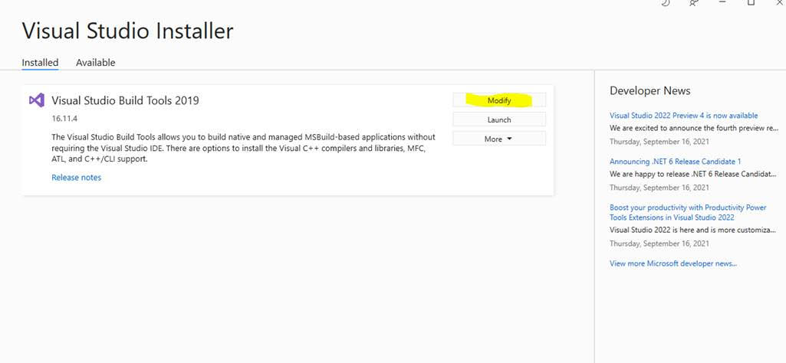
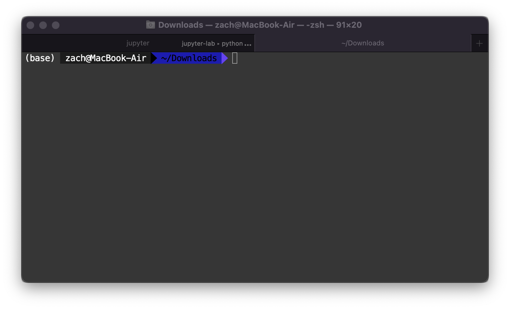
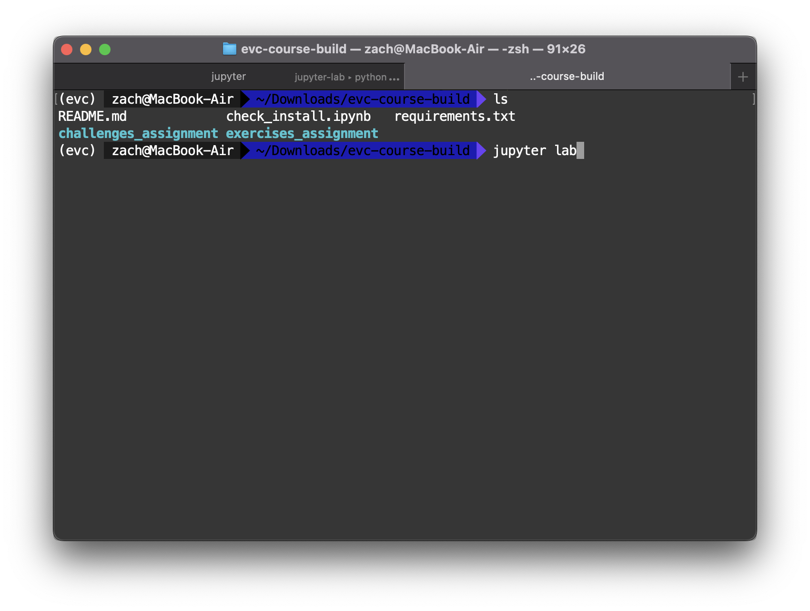

Software Setup
Contents
Software Setup#
In short, you’ll need:
Exercise files (Download)
Python and Jupyter (Recommended: Anaconda)
If you have any issues with these steps: Please ask a TA! We will gladly help you set up your environment.
Exercises Files#
We will work through a number of programming exercises in this course. We have consolidated the exercise notebooks and installation files in a single zip; download the following and unzip.
This will download a file called evc-course-build.zip. Save this to a stable location on your computer; for instance, your Documents folder.
Python and Jupyter Installation#
We recommend Anaconda
python, which will
provide almost everything you need. Make sure to install python version >= 3.0.
Windows Installation#
If you are on Windows, you may need to install Visual C++ Build Tools. You will need to download the file under Tools for Visual Studio 2019 > Build Tools for Visual Studio 2019: This Stack Overflow post gives more details; note that Microsoft continually “updates” these links. If the build tools link above does not work for you, try Googling "microsoft visual c++ build tools": This is (honestly!) the best way to find a working link.
Make sure to select the build tools
When installing Visual C++, you may see the following interface. If yes, do not click launch; instead, first click Modify.

Within this menu, make sure the C++ build tools are selected, as pictured below.

Once you’ve selected these tools, you can click Install.
Tutorial: Using a Terminal#
Many software tools are most easily accessed through a programmatic interface called a terminal. This section is a brief tutorial on using a terminal. We will make minimal use of the terminal in this course, but it will be absolutely essential for setting up your computer for the course. Please ask a TA if you have any issues using a terminal.
Opening a terminal#
Mac:
terminal.appis your terminal – you can find this through Spotlight search (Command + Spacebar).Windows: After you have installed Anaconda python, you will have access to
Anaconda prompt– use this as your terminal for the course.Linux: If you’re on Linux, you probably already use a terminal regularly. On Ubuntu the shortcut to open a terminal is
Ctrl + Alt + T.
After opening your terminal, you should see a window that looks something like the following.

To use the terminal, you manually type commands, then press Enter to execute.
Changing directory#
When looking for files (Mac: Finder, Windows: Explorer, Linux: e.g. Nautilus), we use a program to look at directories. Your terminal does something similar—at any point it is located in a particular directory. The following screenshot illustrates changing directories (cd) to my Downloads folder, then listing (ls) the contents of said directory. This is where I placed the evc-course-build.zip archive for the course. (Note: On Windows, you must use the command dir, rather than ls.)

I unzip the archive evc-course-build.zip from within terminal with the command unzip evc-course-build.zip, which results in the following:

Note: On Windows, instead of unzip, you will need to run tar -xf exercises.zip.
I can then cd into the unzipped folder evc-course-build and install the required Python packages with pip install -r requirements.txt. However, I can only do this after I’ve installed Anaconda!
Python Module Installation#
Once you have installed python, you will need to install a handful of python modules to complete all the course exercises. Anaconda provides a package installer called pip; from the command line, you can simply execute the following commands.
In your terminal, change directory to where you unzipped the exercises, and execute the command:
pip install -r requirements.txt
This will install the requirements for the course.

Opening Jupyter Notebooks#
Jupyter notebooks are a particular way of working with Python code. They are designated with the file extension .ipynb. Unfortunately, you cannot simply double-click on a Jupyter notebook to open it. Instead, you must launch the Jupyter client from your terminal. Navigate to the directory where you want Jupyter to launch (for the course, this is where you unzipped the contents of evc-course-build.zip), and execute the command jupyter lab.

This will open a webpage in your browser with a file explorer-like view; you can then click on the notebooks in that directory to open them. You can find files using the Folder tab, pictured below.

Go ahead and open check_install.ipynb, which you will run at the end of installation to check if everything is set up correctly.
Once you have verified your install, you can access all the Exercises and Challenges from the appropriate folder. For instance, I opened the first exercise in the following image.

Final Check#
To check that you’ve successfully set up your computer for the course, please run the following jupyter notebook.
Test your installation
Download and run check_install.ipynb. This is also included in the course materials file noted above.
Navigate to the folder where you downloaded check_install.ipynb, execute the command jupyter lab, open check_install.ipynb, and click on Run > Run all cells. If you can successfully run thenotebook (without errors), then you are ready for the course!
Progression#
The exercises_assignment/ folder contains the take-home exercises that will introduce you to the concepts and skills covered in the class. Each of these exercises is labeled with a prefix (e.g. d01- for the first day), so the exercises should appear in your folder in-order. You should try these exercises on your own, but if you get stuck, keep in mind that the solutions are available online!
The challenges_assignment/ folder contains the homeworks for the course. These are provided without solutions, so try to complete these to the best of your ability. See this page for the exercise schedule.